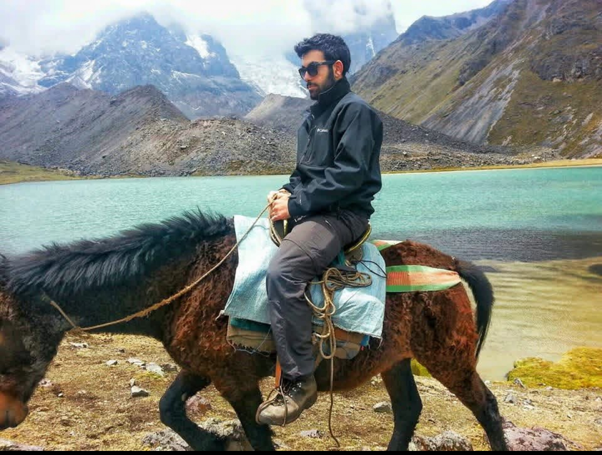
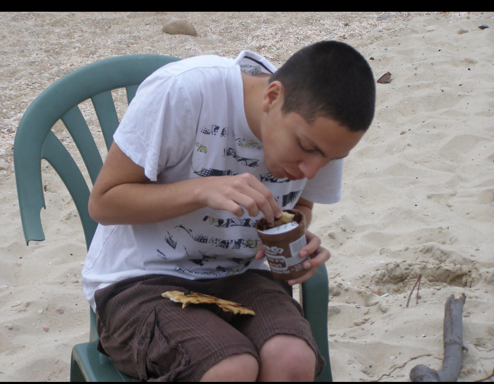
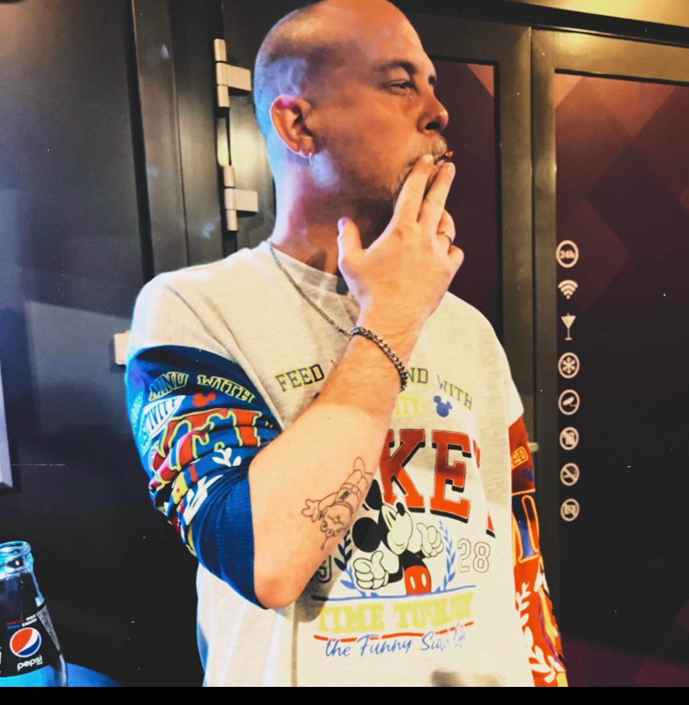

⚽ רשימת שחקני Pasta League ⚽

Ilya
ניצחונות: 4 | הפסדים: 1 | תיקו: 2 | שערים: 6
הטורף השקט
Aviv
ניצחונות: 3 | הפסדים: 2 | תיקו: 1 | שערים: 5
הקוסם של החוף

Gil
ניצחונות: 2 | הפסדים: 2 | תיקו: 3 | שערים: 4
הלב של הקבוצה

Elior
ניצחונות: 5 | הפסדים: 2 | תיקו: 1 | שערים: 4
אמן ההגנה
Yarden
ניצחונות: 3 | הפסדים: 3 | תיקו: 1 | שערים: 3
מהיר כמו רוח

Liad
ניצחונות: 4 | הפסדים: 3 | תיקו: 0 | שערים: 7
הכוכב העולה
Arthur
ניצחונות: 2 | הפסדים: 4 | תיקו: 1 | שערים: 2
הברזילאי של הליגה

Tibi
ניצחונות: 3 | הפסדים: 1 | תיקו: 2 | שערים: 6
החלוץ הגדול
Alex
ניצחונות: 2 | הפסדים: 1 | תיקו: 1 | שערים: 2
הקפטן המושלם

Shabo
ניצחונות: 3 | הפסדים: 1 | תיקו: 0 | שערים: 4
המאסטרו של Pasta
🏆 חזרה לעמוד הראשי